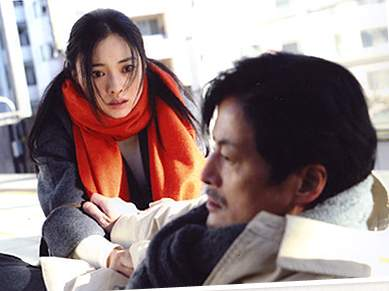

故事
故事的一開始，源於一個中年男子藤本誠的自殺未遂事件。這名男子四年前因為一場火災，頓時失去妻女，原本一個再平凡不過的幸福家庭一夕之間化為烏有。太過傷心的他又因為精神恍惚而丟掉工作，日子越過越孤獨、越活越失意，孤家寡人的他四年來嚐盡寂寞絕望的滋味，生命失去目標，終於決定從電車月台一躍而下了結此生。但就在他準備縱身跳下月台的剎那，突然有一男一女分別用力拉住他，阻止他尋死。這個故事於是就從這三個素不相識的陌生人互動過程中逐漸開展......
救人的男子田崎翔太其實是個害羞被動的水泥匠，同樣伸出援手的女子中城加奈平時則是個文靜內向的上班族。兩個同樣都不屬於主動積極型的人，卻在同時都感受到了藤本誠整個人散發出消極和絕望的氣息，並且一反自己的個性，及時衝過去挽救了他的性命。要說這是巧合，還不如說，因為他們兩個都是過來人，所以深知身處絕境時的特殊氣場，才會感應到藤本誠當時不尋常的狀態，奮不顧身地要挽回他的性命。
這是由三個現在或曾經面臨生命困境的人所交織的心情故事。隨著劇情一集集開展，觀眾開始知道翔太也有曾經走不過的難關，企圖自殺又被家人救回；加奈也有屬於自己一直過不去、至今依然難以啟齒的生命難題，她也曾經企圖跳下月台自殺，也是被人及時拉住....
事實上不管是田崎、加奈還是藤本，他們都是看似再平常不過的一般人。然而，卻也是在這樣看來極為平凡正常的外表底下，每個人都還是有著屬於自己的傷痛或祕密，他們（或我們每個人）只是不曾將這樣的傷痕揭露給別人看，但不表示這樣的自己並不存在。腳本家山田太一在這裡要說的應該是，所有看似普通的正常人，其實內心多少都有一些不足為外人道也的隱私，所謂的「普通人」這個族群，或許根本不存在，因為每個人的生命，包括你我在內，都有某些不同於一般人的獨特之處～
就像中城家，除了加奈因為年輕無知造成刮宮過度無法生育這樣的大事，媽媽和奶奶也都有屬於自己非常隱密的、不能說出口的短暫婚外戀情，爸爸則有對任何人都難以啟齒的扮裝癖好。田崎家的爸爸也有扮裝癖，媽媽則是因為公公曾經毛手毛腳憤而離婚追求自由，這也是家族中的祕密，媽媽從來都沒對翔太說過....
而對於加奈、翔太和藤本這些曾經輕生過的人而言，一個人孤絕到最後，那心境足以讓人自閉到窒息、想走上絕路，如果有人能夠適時稍微敞開心胸，主動提供一點點善意和溫柔，那麼，事情是不是就不會往黑暗的方向惡性循環？整個社會是否就可以一點點朝向光明走入善的循環？就像加奈和翔太都曾經接受過陌生人或親人的及時相助，所以後來才能重新站起，有機會在月台上及時拯救另一個人的性命。藤本誠受到他們的幫助，才能重新振作回到生活常軌，而經由他的主動介入推動，加奈和翔太陷入泥沼的感情和姻緣也才能漸漸得到助力，最終獲得雙方家長的允許和祝福.....
生長在戰亂時代的田崎爺爺和中城奶奶，總是執意想傳下好不容易得以延續的家族香火，總覺得一門血脈不能在自己手上中斷，因而對於加奈的無法生育耿耿於懷，差點就讓加奈和翔太這段溫柔的好姻緣就此結束。然而，就像藤本誠的故事所告訴觀眾的，世事無常，再幸福平凡的家庭都可以一夕之間化為烏有，所有的傳家堅持似乎也可以一下子變得毫無意義。所以血緣這件事，真的有那麼重要嗎？爺爺的水泥匠事業有個忠心而耿直的員工神戶幸作一路相挺，神戶甚至願意全家搬來與爺爺同住，讓爺爺一享天倫之樂，有個安心的晚年；而加奈和翔太遇到的那位曾經因為窮途末路而一度想棄養嬰兒的美代小姐，也因為藤本誠伸出援手，看似組成了一個沒有血緣但又極為充滿人間善念的三代家庭。這個或許有點奇怪的家庭組合，美代和嬰兒的存在成了藤本重生的目標，讓他每天工作得精神奕奕；而，有了藤本的辛勤工作，美代和孩子的生活有了依靠，一個本來瀕臨破碎的單親家庭，也可以繼續安心地走下去～～
所謂的家人之間，即使有血緣的牽繫，尚且都還有不能說或不願分享的隱私或祕密，那麼，沒有血緣的家人共同生活又何妨？只要能夠相互扶持、彼此慰藉，每個人都可以成為別人的依靠，成為讓別人活下去的目標或希望～～ 所以不能生育的加奈、失去家人的藤本，適時拯救了有孩子卻沒有能力撫養的美代，透過善念的傳遞，看似缺憾的個體生命卻可以因為自己的付出而讓更多人得到圓滿～
也所以翔太的爺爺在最後一集裡說的那番話很感人（雖然有點太刻意）。爺爺是個成長於東京大空襲年代的人，像他這樣曾經生活在谷底時代的人，看盡人性的醜惡--欺瞞、背叛、自私、小氣... 因此對任何外人都提防戒備，誰也不信任。然而這種谷底時代的防備心態，同時也讓人們更加孤獨更加封閉更加疏離，現在終究也到了承平時期無須如此防備的時候了，卸下心防、敞開自己的心胸，或許自己得到的反而更多，對於生活會有更多小小的滿足和幸福～～ 就像中城奶奶後來的領悟--同樣是走過谷底時代、曾經什麼都沒有的人，現在有了孫女，還奢望要有曾孫，這樣的願望實在太奢侈、太不知足～～
也所以我很喜歡這部作品的結尾。作為呼應第一集一開始，在公園裡形單影隻、絕望到想自殺的藤本誠，到了最後一集的片尾，他和他擁有的新家人拍下了新的全家福照片。當快門按下的剎那，他真心而歡喜地對著鏡頭說： 「我，不是孤獨一人喔～～」
雖然這是個沒有血緣關係的家庭組合，但藤本已經藉由人與人之間的善意傳遞，讓自己也讓別人得到了全新的生命和全新的家庭。
翔太的爺爺一直以來執意不讓無法生育的加奈與翔太在一起，也不讓雖無血緣關係但忠心耿耿的神戶一家人搬過來跟自己住。他的堅持與防備讓自己的周圍築起高牆，家人對他越來越疏遠，但最後的轉念之間，爺爺放下執念，決定讓神戶一家人搬進屋簷下同住，於是他得到了一個帶著感恩的全新家庭，還附帶兩個熱鬧的小孫子～～ 這樣的家庭全家福照，除了沒有血緣的聯繫，其實比真正的家人更親更快樂也說不定～～
而讓我更開心的是，在片尾畫面裡，兩個同樣有扮裝癖的爸爸再次盛裝打扮，勇敢而優雅地走在眾目睽睽的大街上，盡情享受自己內心非常私密的刺激與快樂，這齣戲走到這裡簡直就是個世界大同的理想藍圖了～～～
後來在這齣戲的幕後訪談時，山田太一提到，日本每年有三萬人（企圖？）自殺。當其他國家還深陷戰亂或貧窮時，在日本這個其實已經非常幸福的國家裡，人們似乎已經忘了珍惜身邊許多被自己忽略的小小美好。所謂平凡的奇蹟，並非榮華富貴飛黃騰達，而是細細品嘗生活週遭的每個小小幸福，小小溫暖，在懂得珍惜這樣生活的同時，生命的奇蹟也就此產生。藤本誠這個角色所代表的「無常」，就在提醒大家，人生充滿各種變數。說不定，一眨眼我們就沒有明天了，那麼，還不好好珍惜現在的想法和心情嗎？還要計較那麼多無謂的堅持嗎？？？倒不如，放下無謂的執著，享受善念傳遞時，週遭回饋的溫暖和美好吧！ 缺憾與圓滿之間，有時候就僅僅在一念之間而已～～